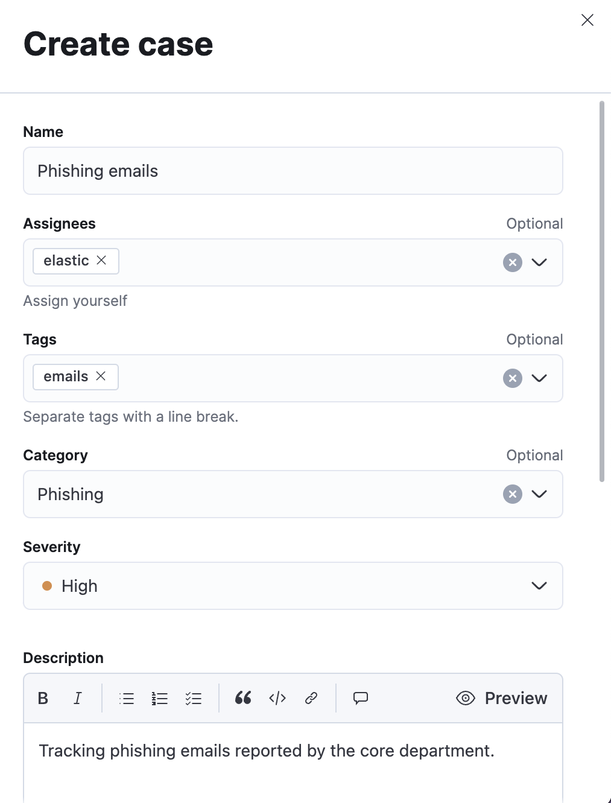
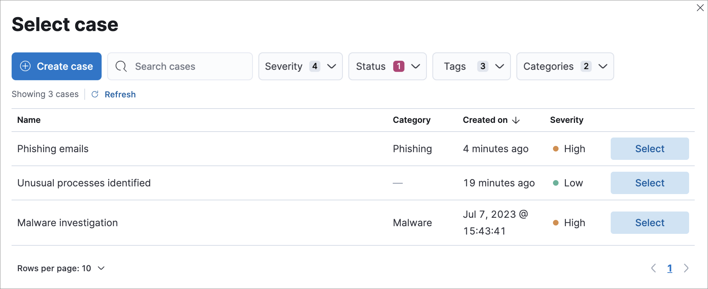

Add detection alerts to cases
editFrom the Alerts table, you can attach one or more alerts to a new case or an existing one. Alerts from any rule type can be added to a case.
- After you add an alert to a case, you can remove it from the case activity under the alert summary or by using the cases API.
- Each case can have a maximum of 1,000 alerts.
Add alerts to a new case
editTo add alerts to a new case:
-
Do one of the following:
- To add a single alert to a case, select the More actions menu (…) in the Alerts table or Take action in the alert details flyout, then select Add to a new case.
- To add multiple alerts, select the alerts, then select Add to a new case from the Bulk actions menu.
-
Give the case a name, assign a severity level, and provide a description. You can use Markdown syntax in the case description.
If you do not assign your case a severity level, it will be assigned Low by default.
- Optionally, add a category, assignees and relevant tags. You can add users only if they meet the necessary prerequisites.
- Specify whether you want to sync the status of associated alerts. It is enabled by default; however, you can toggle this setting on or off at any time. If it remains enabled, the alert’s status updates whenever the case’s status is modified.
-
Select a connector. If you’ve previously added one, that connector displays as the default selection. Otherwise, the default setting is
No connector selected. -
Click Create case after you’ve completed all of the required fields. A confirmation message is displayed with an option to view the new case. Click the link in the notification or go to the Cases page to view the case.

Add alerts to an existing case
editTo add alerts to an existing case:
-
Do one of the following:
- To add a single alert to a case, select the More actions menu (…) in the Alerts table or Take action in the alert details flyout, then select Add to existing case.
- To add multiple alerts, select the alerts, then select Add to an existing case from the Bulk actions menu.
-
From the Select case dialog box, select the case to which you want to attach the alert. A confirmation message is displayed with an option to view the updated case. Click the link in the notification or go to the Cases page to view the case’s details.
If you attach the alert to a case that has been configured to sync its status with associated alerts, the alert’s status updates any time the case’s status is modified.
